Sensores medem a água e a chuva nas ruas de São Paulo que costumam alagar. Uma IA confirma quando é alagamento de verdade, e cada morador atingido recebe automaticamente uma comprovação verificável para pedir auxílio, sem fila e sem papelada.
| Item | Informação |
|---|---|
| Curso e turma | Engenharia de Software · 4ESOA |
| Integrante | Igor Nunes Teixeira · RM [PREENCHER] |
| Grupo | [PREENCHER nome do grupo] |
| Repositório | github.com/IgornTeii/ProvaD-Agua |
| Vídeo pitch | [PREENCHER link público] |
| ODS | 11 · Cidades sustentáveis | 13 · Ação climática | 10 · Redução das desigualdades |
Locais reais de São Paulo; alagamentos e leituras dos sensores gerados por simulação. Métricas da IA medidas em dados simulados.
Soluções de enchente costumam resolver o antes: previsão e alerta. Quase ninguém resolve o depois. Quem perde móveis, eletrodomésticos ou dias de trabalho num alagamento precisa provar que foi atingido para pedir auxílio, seguro ou saque emergencial. Hoje essa prova depende de foto, protocolo, vistoria e semanas de espera, e quem mais sofre é quem tem menos condição de esperar.
Um exemplo real: no temporal de 10 de fevereiro de 2020, o Centro de Gerenciamento de Emergências Climáticas (CGE) da Prefeitura registrou 132 pontos de alagamento em São Paulo, 66 deles intransitáveis. A Av. Antônio Munhoz Bonilha, na Freguesia do Ó, um dos 8 pontos monitorados neste protótipo, estava na lista de alagamentos do CGE naquele dia.
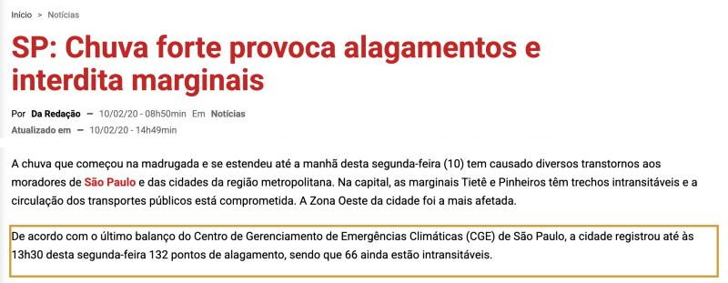
Moradores de ruas que alagam com frequência, principalmente famílias de baixa renda. Persona: Dona Maria mora numa rua que alaga toda vez que chove forte. Depois de cada enchente, junta fotos e enfrenta filas para comprovar o prejuízo. Com o Prova d'Água, ela digita o nome da rua, vê a comprovação do seu endereço e mostra o código ao órgão de auxílio.
| Participante | Papel no ecossistema |
|---|---|
| Cidadão | Consulta a situação da rua, recebe o aviso e pega a comprovação do seu endereço |
| Defesa Civil | Define os limites (suspeita e elegibilidade) e acompanha mapa, histórico e dashboard |
| Prefeitura, auxílio e seguradoras | Verificam a autenticidade da comprovação pelo código |
| Sensores (IoT) | Medem nível de água e chuva na rua a cada 10 segundos |
Cada serviço tem seu próprio Dockerfile e se comunica só por HTTP. O dashboard aparece tracejado porque ainda está em desenvolvimento.
A IA só classifica uma sequência de leituras. Quem aplica a regra de negócio (confirmar, descartar, encerrar, emitir comprovação) é o domínio da API. Assim a regra fica num lugar só, e o modelo pode ser trocado sem mexer no domínio.
| Parte | Tecnologia | Por quê |
|---|---|---|
| API | C# · ASP.NET Core .NET 10 · EF Core | Versão LTS; Clean Architecture com Result pattern; o compilador garante a direção das dependências |
| Banco | PostgreSQL 17 | Índices únicos e parciais garantem as regras de idempotência |
| IA | Python · scikit-learn · Flask | Modelo explicável e mensurável, sem custo de API |
| IoT | Simulador Python (só biblioteca padrão) | Mock permitido pelo regulamento; reproduz uma enchente sob demanda |
| Site | React 19 · TypeScript · Vite · Leaflet | Mapa real de São Paulo (OpenStreetMap), sem chave de API |
| CI | GitHub Actions | Gratuito em repositório público |
Um sensor de nível não distingue um alagamento real de um carro jogando água nele, ou de um saco de lixo parado embaixo. Uma regra fixa ("acima de X cm é alagamento") gera falsos alarmes e, portanto, comprovações e auxílios indevidos.
A IA recebe uma janela de leituras, nunca uma leitura isolada, e calcula 8 características do comportamento da água:
| Característica | O que revela | Importância |
|---|---|---|
| Chuva média | Se a subida acompanha a chuva | 26,4% |
| Nível médio | Se a água ficou alta de forma sustentada | 23,2% |
| Fração acima de 15 cm | Quanto da janela ficou acima da suspeita | 22,5% |
| Maior sequência acima de 15 cm | Minutos seguidos, e não segundos | 8,9% |
| Maior salto entre leituras | Pico isolado típico de splash | 8,0% |
| Nível máximo · oscilação · tendência | Altura, estabilidade e direção da água | 10,9% |
Um Random Forest (200 árvores, profundidade 8) classifica em alagamento ou ruído. Com menos de 6 leituras, ou confiança abaixo de 80%, a resposta é inconclusiva.
1.000 janelas de teste separadas das 3.000 de treino (500 alagamentos e 500 ruídos), geradas pelo simulador com casos difíceis: enxurrada rápida, alagamento sem chuva no bairro, obstruções de minutos e perda de eco do sensor.
| Regra fixa (≥ 15 cm por 3 leituras) | Modelo | |
|---|---|---|
| Acurácia | 75,6% | 99,9% |
| Precisão (alagamento) | 67,4% | 100% |
| Recall (alagamento) | 99,0% | 99,8% |
| F1 (alagamento) | 80,2% | 99,9% |
Entrada (POST /classify): a água sobe junto com chuva forte.
{"readings": [
{"waterLevelCm": 16, "rainfallMmPerHour": 42},
{"waterLevelCm": 19, "rainfallMmPerHour": 45},
{"waterLevelCm": 23, "rainfallMmPerHour": 47},
{"waterLevelCm": 27, "rainfallMmPerHour": 50},
{"waterLevelCm": 31, "rainfallMmPerHour": 52},
{"waterLevelCm": 34, "rainfallMmPerHour": 51}
]}
Saída:
{"label": "flood", "confidence": 1.0}
Entrada: um único pico de 38 cm, sem chuva (carro jogando água).
{"readings": [
{"waterLevelCm": 0.5, "rainfallMmPerHour": 0},
{"waterLevelCm": 0.6, "rainfallMmPerHour": 0},
{"waterLevelCm": 38, "rainfallMmPerHour": 0},
{"waterLevelCm": 0.4, "rainfallMmPerHour": 0},
{"waterLevelCm": 0.5, "rainfallMmPerHour": 0},
{"waterLevelCm": 0.5, "rainfallMmPerHour": 0},
{"waterLevelCm": 0.6, "rainfallMmPerHour": 0}
]}
Saída:
{"label": "noise", "confidence": 0.995}
Com só 3 leituras, a resposta é {"label": "inconclusive", "reason": "São necessárias pelo menos 6 leituras."}.
Um processo em segundo plano na API roda em ciclos (30 s em produção, 2 s na demonstração) e aplica estas regras:
| Situação | Ação automática |
|---|---|
| Leitura chega acima de 15 cm e não há evento aberto | Abre um evento Suspeito |
| Evento Suspeito + IA responde "alagamento" | Evento Confirmado; SMS (simulado) para quem cadastrou o celular naquela rua |
| Evento Suspeito + IA responde "ruído" | Evento Descartado; nenhuma comprovação é emitida |
| IA inconclusiva ou fora do ar | Nada muda; tenta de novo no próximo ciclo. Nunca confirma nem descarta "por garantia" |
| Evento Confirmado + 18 leituras seguidas abaixo de 15 cm | Evento Encerrado e uma comprovação por endereço coberto, na mesma transação |
| Pico do evento ≥ 30 cm | Comprovação marcada como elegível a auxílio |
O CI retreina o modelo a cada push e funciona como quality gate: o pipeline falha se a acurácia, a precisão ou o recall ficarem abaixo de 95%, ou se o modelo deixar de ganhar da regra fixa. A tabela de métricas é publicada no resumo de cada execução.
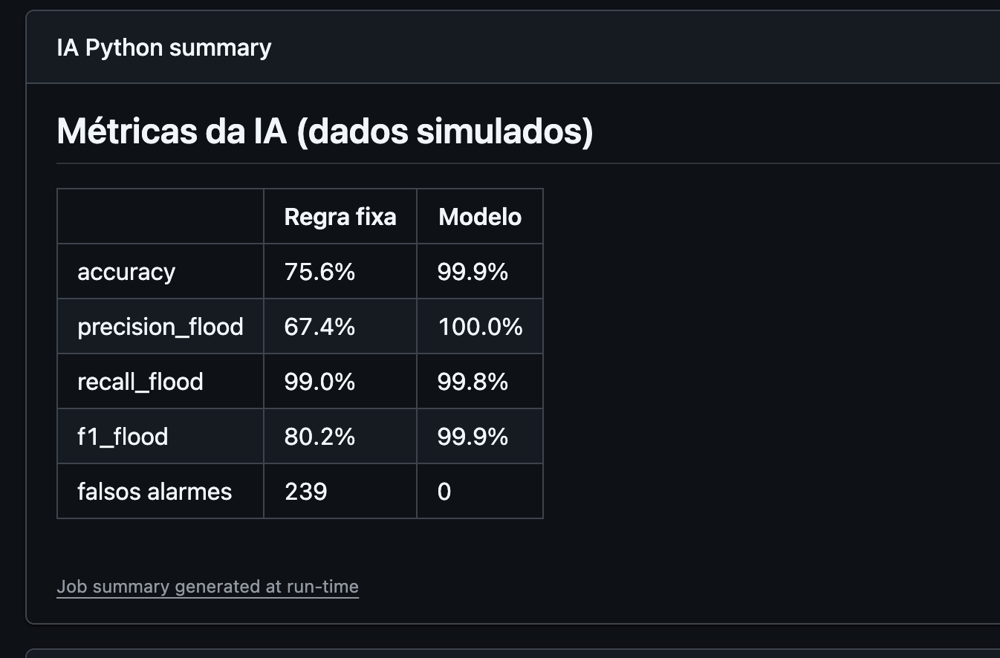
| Camada | Conteúdo | Onde está |
|---|---|---|
| Bruto | Leitura exatamente como chegou do sensor. Imutável e nunca apagada: é a prova | Tabela readings e data/raw/training_readings.csv (115 mil leituras de treino) |
| Tratado | Sem duplicatas, sem valores impossíveis, datas em UTC | Validação no domínio e índices únicos do banco |
| Analítico | Eventos, comprovações e agregados prontos para o dashboard | Tabelas flood_events, flood_certificates, alert_notifications |
| Sensor | Equivalente real | O que mede |
|---|---|---|
| Nível de água | Ultrassônico HC-SR04, instalado 2 m acima da rua | Distância até a superfície, convertida em altura da água. Simula ruído de medição e perda de eco |
| Pluviômetro | Pluviômetro de báscula | Intensidade da chuva em mm/h, com variação de ±10% |
Por que dois sensores: o nível sozinho não distingue um alagamento de um carro jogando água. A chuva é o contexto que a IA usa para decidir. O simulador tem 6 cenários (alagamento, enxurrada, alagamento sem chuva local, splash, obstrução e chuva fraca) e roda em 8 pontos reais de São Paulo que costumam alagar, com 3 endereços cobertos cada.
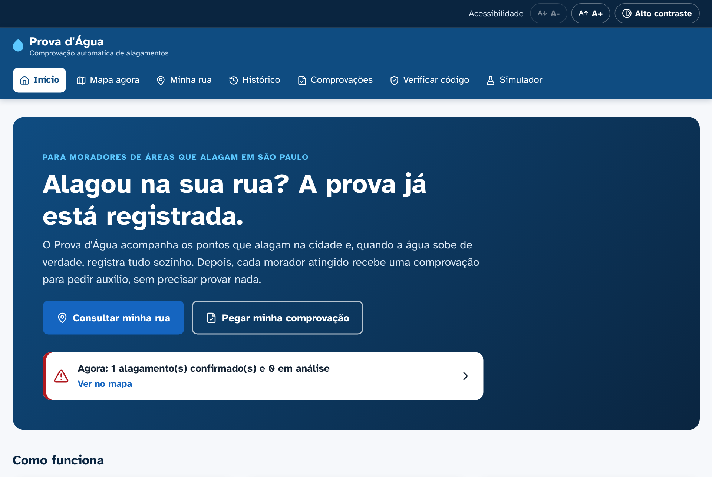
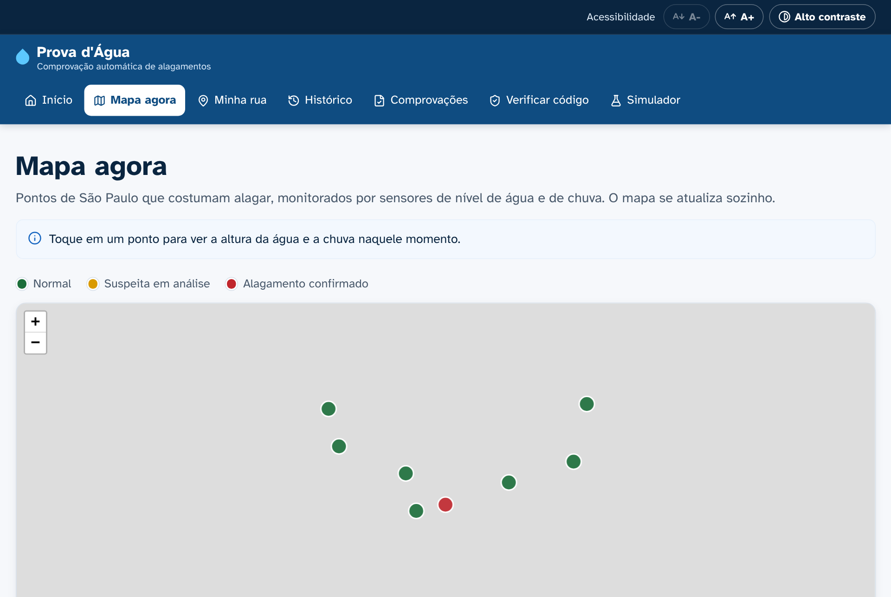
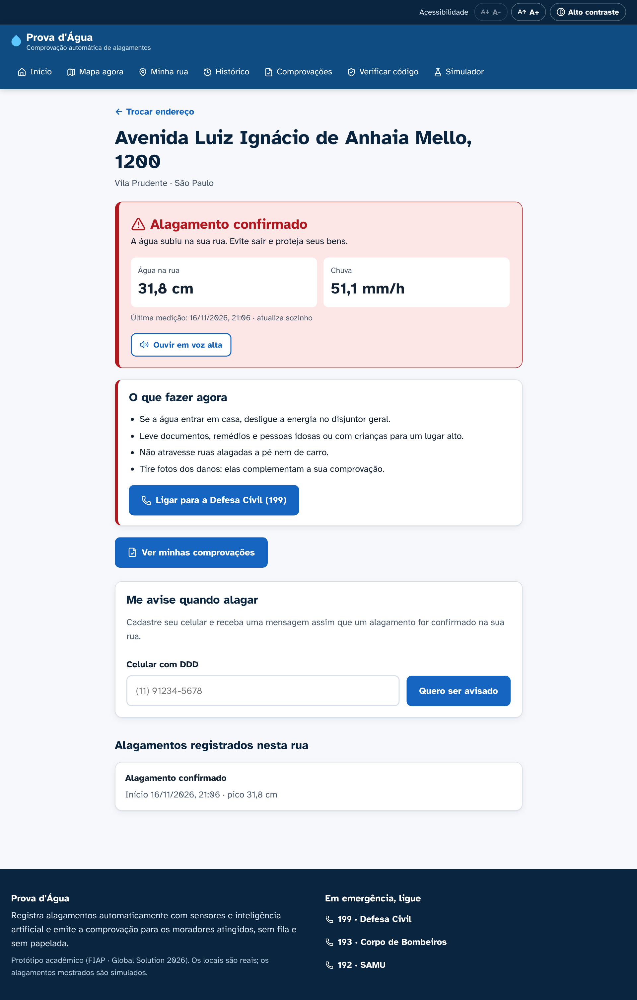
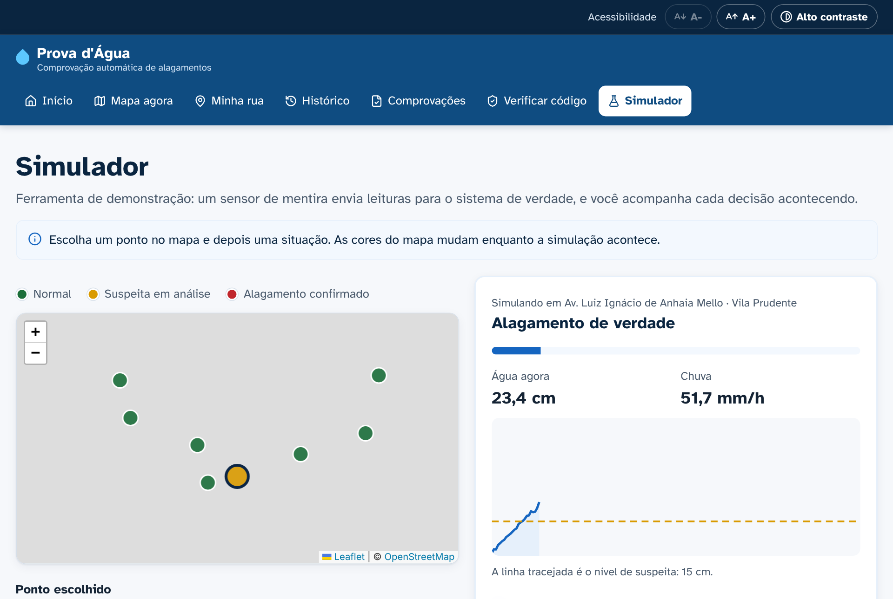
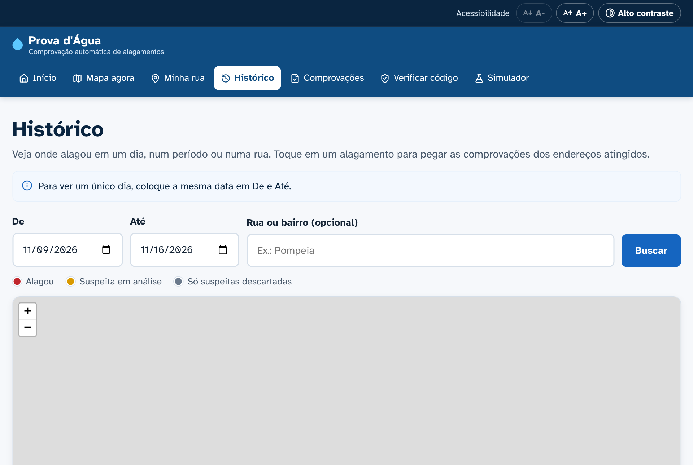
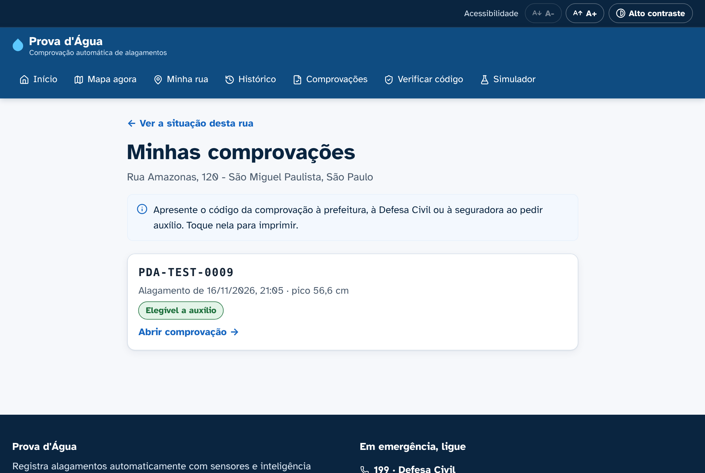
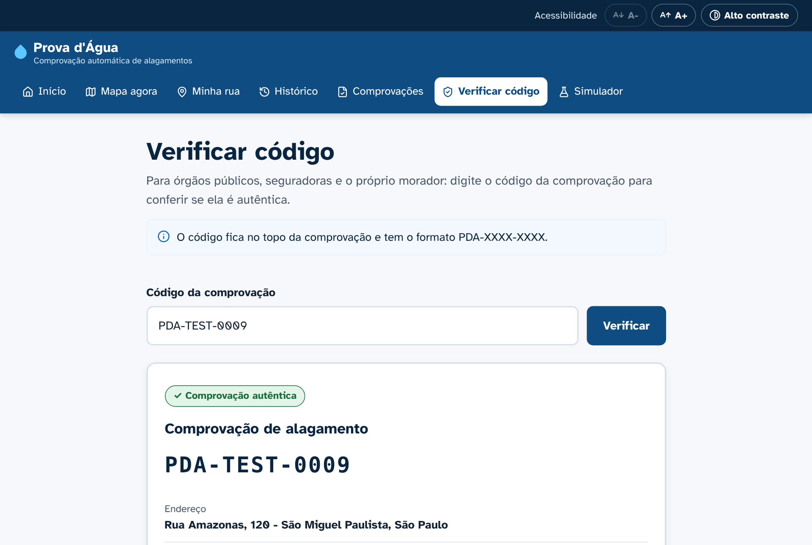
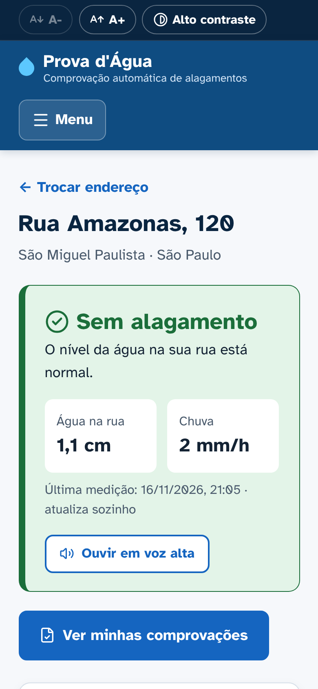
Prints gerados com dados de demonstração; os códigos de comprovação reais têm o formato PDA-XXXX-XXXX com letras e números aleatórios.
Esse fluxo, junto com o caso de ruído (o splash tem de ser descartado), é testado automaticamente no CI com todos os serviços reais rodando.
Monorepo versionado no GitHub, com um módulo por serviço: api/ (4 projetos em Clean Architecture), ai/, iot/, web/, data/, tests/smoke/ e .github/workflows/. Cada módulo tem seu Dockerfile e seus testes.
Docker Compose sobe os 5 serviços com um comando (docker compose up --build -d), com healthchecks, dependências e migrations aplicadas na subida. O GitHub Actions roda 6 jobs a cada push:
| Job | O que valida |
|---|---|
| API .NET | Restore, build e testes xUnit; resultados guardados como artefato |
| IA Python | Testes, quality gate do modelo e tabela de métricas no resumo |
| Simulador IoT | Sensores, cenários e servidor HTTP |
| Site (unitários) | Tipos (TypeScript), lint e testes com Vitest |
| Site (navegador) | Playwright no desktop e no celular; trace salvo se falhar |
| Sistema completo | Sobe tudo com Docker Compose e roda um alagamento e um splash de ponta a ponta |
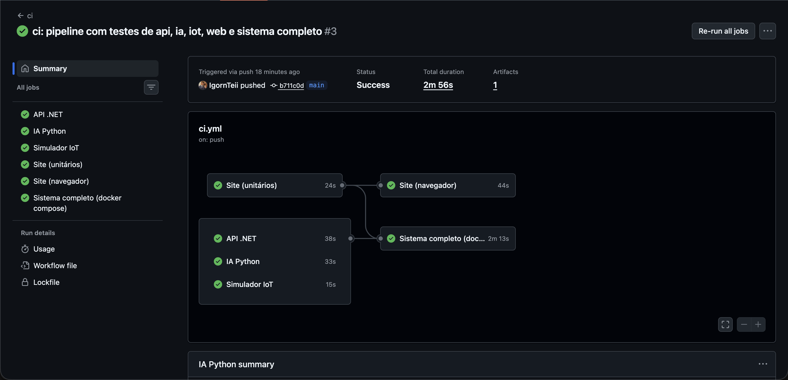
| Prática | Como foi aplicada |
|---|---|
| Autenticação do sensor | Chave por sensor no cabeçalho X-Sensor-Key. A identidade vem da chave, nunca do corpo: uma chave vazada não permite forjar alagamentos em outras ruas |
| Validação de entrada | O domínio recusa leituras impossíveis; o cadastro exige celular com 10 ou 11 dígitos; IA e simulador validam o formato do que recebem |
| Integridade e idempotência | Índices únicos impedem leitura duplicada, dois eventos abertos no mesmo sensor, duas comprovações por endereço e evento e aviso repetido |
| Código não adivinhável | PDA-XXXX-XXXX com gerador criptográfico e sem caracteres ambíguos |
| Privacidade (LGPD) | A API só devolve o telefone mascarado, como (11) •••••-4321; as fontes do site são servidas pelo próprio site, sem enviar o IP do cidadão a terceiros |
| CORS restrito | A API só aceita chamadas de navegador vindas do próprio site |
As chaves de sensor do repositório são de desenvolvimento. Em produção, viriam de um cofre de segredos e seriam guardadas como hash.
81 execuções de testes automatizados em 5 camadas (8 xUnit, 19 da IA, 25 do simulador, 21 do site e 4 cenários de navegador × 2 telas), mais o teste do sistema inteiro. Casos principais:
| # | Camada | Caso e entrada | Resultado esperado | Evidência |
|---|---|---|---|---|
| T01 | Domínio | Criar leitura com nível negativo | Falha invalid_water_level | ReadingTests |
| T02 | Domínio | Encerrar evento ainda Suspeito | Falha; estado não muda | FloodEventTests |
| T03 | Domínio | Confirmar evento já confirmado | Segunda tentativa falha | FloodEventTests |
| T04 | Domínio | Registrar nível menor que o pico | Pico se mantém | FloodEventTests |
| T05 | IA | Janela com 5 leituras | inconclusive, sem confiança | test_serve.py |
| T06 | IA | Corpo sem readings ou com valor não numérico | HTTP 400 | test_serve.py |
| T07 | IA | 40 alagamentos e 40 ruídos simulados | Nenhum alagamento vira ruído e nenhum ruído vira alagamento | test_serve.py |
| T08 | IA | Retreino completo do modelo | Acurácia, precisão e recall ≥ 95% e melhor que a regra fixa | test_model_quality.py |
| T09 | IoT | Sensor ../sensor-01 ou fora do padrão | HTTP 400 | test_server.py |
| T10 | IoT | Duas simulações no mesmo sensor | Segunda recebe 409; outro sensor recebe 202 | test_server.py |
| T11 | IoT | Saco de lixo de 35 cm embaixo do sensor | Estação lê 35 cm (o ruído que a IA precisa filtrar) | test_sensors.py |
| T12 | Site | Clicar em todas as páginas do menu, duas vezes | Toda página abre sem tela branca e sem erro | navigation.test.tsx e Playwright |
| T13 | Site | Ligar alto contraste e recarregar | Preferência mantida | accessibility.test.tsx |
| T14 | Site | Verificar código inexistente | Erro de "não encontrado" (HTTP 404) | api.test.ts |
| T15 | Sistema | Alagamento no sensor-01 e splash no sensor-02, com todos os serviços reais | Splash descartado; alagamento confirmado, encerrado e com comprovação verificável | tests/smoke/smoke.py no CI |
Regressão encontrada pelos testes: navegar pelo menu deixava a tela branca. O Chrome passou a devolver uma Promise em window.scrollTo(), e o código usava esse retorno como função de limpeza de um efeito do React. O caso T12 reproduz o comportamento novo do navegador e falha com o código antigo.
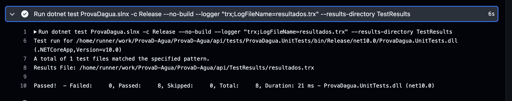
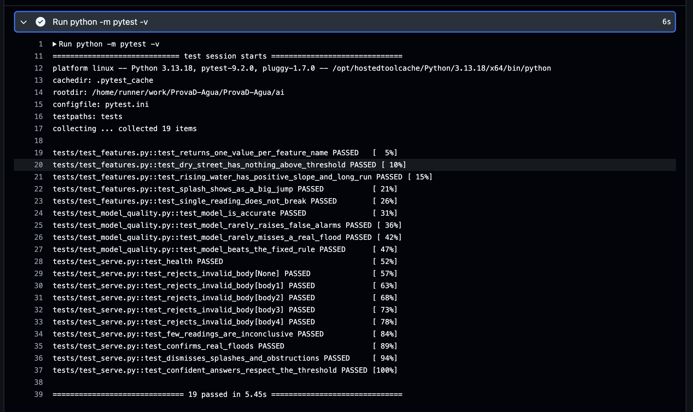
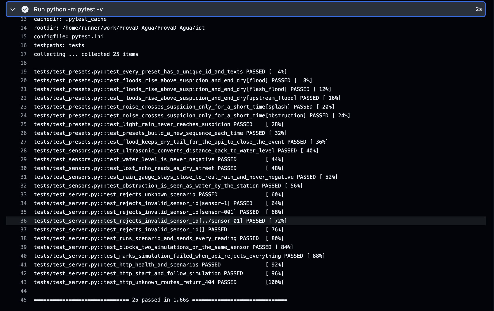
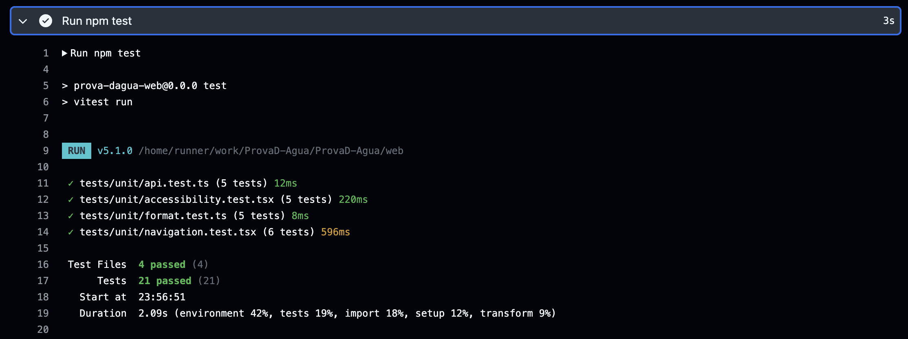
| Indicador | Hoje | Com o Prova d'Água |
|---|---|---|
| Tempo até a comprovação | Semanas (foto, protocolo, vistoria) | Logo depois que a água baixa |
| Quem prova o alagamento | O próprio cidadão | O sensor, de forma automática |
| Falsos alarmes (simulado) | 239 em 500 com a regra fixa | 0 em 500 com a IA |
| Aviso ao morador | Nenhum | Mensagem quando o alagamento é confirmado |
Como escala: os limites de suspeita (15 cm) e de elegibilidade (30 cm) são parâmetros da Defesa Civil de cada município. Para outra cidade, basta instalar sensores e cadastrar os endereços cobertos.
Conforme o regulamento, declaro as ferramentas de IA generativa usadas e para quê. Todo o conteúdo gerado foi lido, entendido e revisado por mim antes de entrar no projeto.
| Ferramenta | Uso |
|---|---|
| Claude (Anthropic) | Apoio na ideação, em dúvidas de arquitetura e de erros, e na geração e revisão de código e documentação |